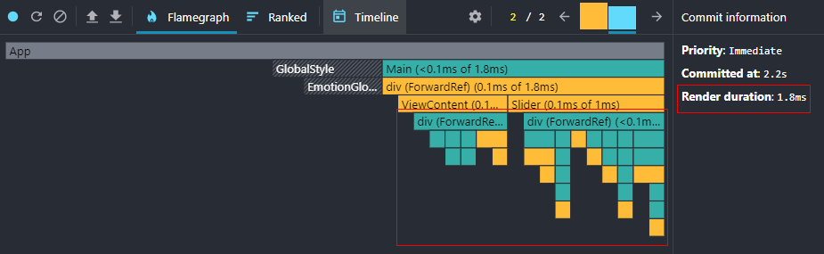
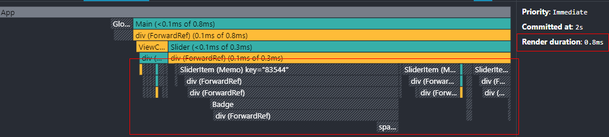

📃구현 CheckList!!
- 가구 정보가 있는 곳에 돋보기 모양의 버튼 표시
- 돋보기 버튼을 클릭하면 tool tip 출력
- 닫기 버튼을 클릭하면 tool tip 제거
- tool tip 하나만 출력, 다른 가구 선택 시 다른 tool tip 출력
- 하단 상품목록 클릭 시 해당 tool tip 출력
- 입점되어있는 가구, 입점되지 않는 가구 출력
📖회고 내용
📊코딩할 때도 수학을 사용한다?!
과제를 받아 관련 문서를 보니 가구 데이터 한 개당 위치에 해당한 x와 y의 값을 확인했다. 이 데이터를 어떻게 가공하여 아이콘과 툴팁을 올바르게 배치할 수 있을까 해결 방법을 고민했다.
처음에는 절대 좌표(좌표그대로) 사용하는 방법을 생각했다. 하지만 아이콘의 툴팁마다 말꼬리풍선이 위치가 다르게 출력되는 것을 알게 됐다. API에서 받아온 좌표를 버튼아이콘에는 그대로 쓸 수 있지만 툴팁은 무언가 다를 것이라 생각했다.
두 번째 방법은 규칙을 찾는 방법을 생각했다. 아이콘의 툴팁이 좌표의 절대적인 값에 의해 바뀌는 것인지, 상대적인 값에 의해 바뀌는것인지를 고민하게 됐다. 그 결과 돋보기의 좌표는 API에서 불러온 좌표값 * 1.6, 툴팁은 이미지를 사분면으로 나누고 툴팁의 말풍선꼬리의 위치가 변하는 것을 발견했다.
- 1사분면: 말풍선 꼬리는 툴팁의 오른쪽 상단
- 2사분면: 말풍선 꼬리는 툴팁의 왼쪽 상단
- 3사분면: 말풍선 꼬리는 툴팁의 왼쪽 하단
- 4사분면: 말풍선 꼬리는 툴팁의 오른쪽 하단
♻렌더링 최적화
과제 구현 후 아이콘 클릭, 이미지박스 선택 시 모든 컴포넌트가 리렌더링 되는 것을 확인하게 되어 불필요한 렌더링을 최소화하기 위해 useMemo와 useCallback을 적절히 활용하여 렌더링 최적화 를 진행했다.
리액트에서 부모 컴포넌트가 리렌더링 되면 자식 컴포넌트들 모두 리렌더링 되는 특징이 있다. 현재 구현 상태는 부모 컴포넌트에서 상태가 바뀌어 자식 컴포넌트인 아이콘, 이미지박스가 모두 리렌더링 되는 것이다.
그래서 자식 컴포넌트인 아이콘과 이미지박스 컴포넌트에 props가 변경되지 않으면 리렌더링 되지않는 React.memo를 적용시켰다. 또한 부모에서 아이콘과 이미지박스에 onClick이벤트를 props로 내려주는데 이 onClick이벤트를 useCallback을 적용시켜 렌더링을 최소화했다.
💦useCallback 사용 시 어려움
useCallback을 사용하면서 콜백 함수 부분에 이벤트 동작 시 변경된 state와 비교하여 결과를 바꾸는 로직이 있었다. 의존성 배열에 state를 추가하지 않는다면 콜백 함수 내부에서 state가 변하지 않는 것을 확인하고 의존성 배열에 state를 넣어 해결했다.
하지만 state가 변할 때 props로 내려주는 함수가 바뀌게 되어 최적화가 제대로 되지 않은 것을 확인했다. 그래서 useCallback의 의존성 배열에서 state를 제외한 뒤 로직을 수정했다. 수정한 로직은 변경된 state와 비교하지 않고 엘리먼트 요소의 이름으로 판별하여 useCallback의 문제를 해결했다.
🌈최적화 결과
최적화 전

최적화 후

위 사진은 같은 동작 시 React Profiler에서 렌더링 되는 부분을 캡처한 것이다. 최적화를 하기 전에는 색깔별 박스는 렌더링 되는 요소들을 뜻한다. 최적화 후에 회색박스로 되어있는것은 해당 컴포넌트가 메모이제이션이 되었다는 뜻이다. 렌더링 최적화를 진행하여 같은 동작렌더링 시간을 1.8ms → 0.8ms 로 줄일 수 있었다.
🌝느낀점
초,중,고 때 스쳐지나갔던 수학실력..?을 뽐내는 경험을 하게 됐다. 개발자라고 개발에만 관심 가질것이 아니라 여러 분야를 지속적으로 관심가져야 된다고 느끼게 된 경험이었다.
렌더링 최적화를 하면서 클라이언트에서 렌더링 최적화를 해도 실제 사용에는 많이 영향을 미치지 않지만 개발자로서 성능최적화를 알고, 모르는것은 아주 큰 차이라고 생각이 들었다.
평소에 최적화를 어떻게 진행하고 측정하는지 부채로 남겨놓고 있었는데 좋은기회가 되어 최적화 해보고 측정해보는 기회가 된거 같다. 최적화를 위해 메모이제이션을 하면 좋지만 그만큼 메모리에 부하가 가기 때문에 필요할 때를 구분해서 사용하는것이 좋을거 같다.